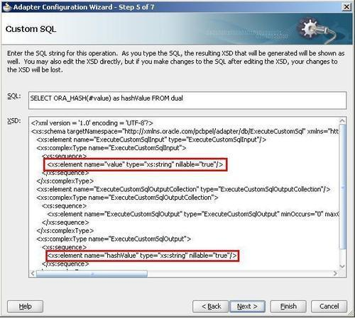
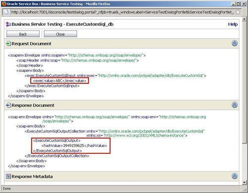
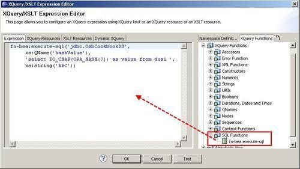

In this recipe, we will use an outbound DB adapter to execute a custom SQL statement against the database to reuse some database functionalities.
With that it's easy to call a function of the database to perform a certain value. We will use the ORA_HASH function to create a hash value for a given string, which we pass as a parameter to the DB adapter.
Make sure that the connection factory is set up in the database adapter configuration as shown in the Introduction section of this chapter.
You can import the OSB project containing the base setup for this recipe into Eclipse from \chapter-7\getting-ready\using-db-adapter-to-execute-custom-sql.
First we create the DB adapter, which will implement the query from the database. In JDeveloper, perform the following steps:
Open the file composite.xml of the project ExecuteCustomSQL.
ExecuteCustomSql into the Service Name field. SELECT ORA_HASH(#value) as hashValue FROM dual into the SQL field. xs:string for the type of the value element and change the type of the hashValue element to xs:string as shown in the following screenshot.
We have created the DB adapter definition for the custom SQL. This is all we need to do in JDeveloper. Let's go back to Eclipse OEPE and perform the following steps to make the DB adapter usable in the OSB:
adapter folder. The artifacts generated by JDeveloper in the previous steps will show up. ExecuteCustomSql_db.jca file and select Oracle Service Bus | Generate Service from the context menu. business folder for the location of the business service. business folder.Let's test the business service through the Service Bus console. Perform the following steps:

hashValue for the string ABC.When selecting the Execute Pure SQL option in the DB adapter wizard, the SQL statement executed against the database can be custom defined. Based on the SQL statement entered, the wizard will try its best to generate the matching data structure for both the input and the output message. This will not always be possible, that is, for the parameter to the ORA_HASH function, the wizard was unable to know the data type and therefore, we had to manually change the XSD in the wizard and set the type to xs:string for the value parameter.
Often it might be possible and even easier to wrap the SQL statement to be executed in a view. In that case the normal Perform an Operation on a Table option can be used to select the data from the view. This might even be easier than using the Execute Pure SQL. In our case, where we have to pass a value to the database function, the wrapping in a view is not possible, so Execute Pure SQL is a good option.
Of course another valid alternative would be to use the Call a Stored Procedure or Function option on the DB adapter, especially if the procedure or function is more complicated than the simple ORA_HASH function used here.
Instead of using the DB adapter to execute a SQL statement, the XQuery function fn-bea:execute-sql, already available before OSB 11g, can be used.
The function has the following signature:
fn-bea:execute-sql( $datasource as xs:string, $rowElemName as xs:QName, $sql as xs:string, $param1, ..., $paramk) as element()*
The following screenshot shows the usage of the function to call the ORA_HASH database function. The expression is from an Assign action in a proxy service.

For the $datasource the JNDI name of a datasource configured on WebLogic has to be passed.
The XQuery function execute-sql has its value. It was actually the only way to access the database directly from Oracle Service Bus prior to version 11g. The big advantage of using the DB adapter compared to the execute-sql function is that the interface to the database is clearly defined by the WSDL, which is generated by the adapter wizard. By that it can be invoked from the message flow of a proxy service like any other service. But be careful, the WSDL generated does not follow a contract-first approach and therefore, should never be exposed to external consumers directly.
Additionally the DB adapter can also be used inbound, which we will see in the recipe, Using the DB adapter to poll for changes on a database table.